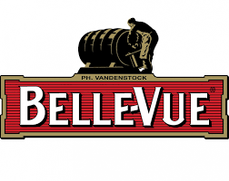

Belle-Vue Brewery
Belle-Vue Brewery는 1913년 벨기에 브뤼셀의 Molenbeek에서 설립된 양조장이다. 람빅 계열의 자연발효 맥주와 과일 맥주를 생산하며, 벨기에 과일 맥주 가운데 가장 잘 알려진 브랜드이다.
최종 업데이트

Belle-Vue Brewery는 어떤 브랜드인가
Belle-Vue는 벨기에의 양조장으로, 람빅 맥주로 알려진 지역과 가까운 브뤼셀 일대에서 출발해 람빅 계열의 자연발효 맥주와 과일 맥주를 만든다. 제품은 Gueuze, Kriek, Kriek Extra, Raspberry 네 종류이며 알코올 도수는 5.5%이다.
벨기에 과일 맥주 가운데 가장 잘 알려진 브랜드이지만, 단맛이 강해 전통적인 신맛의 람빅을 대표한다고 보기는 어렵다. 유일한 전통 제품인 Selection Lambic은 생산량이 매우 적었고 1999년 이후에는 생산되지 않았다.
2025년에는 소유주 AB InBev가 Gueuze 생산을 중단하기로 결정했으나 kriek 양조는 이어졌다. 본사는 Zuun에 있다.
Belle-Vue Brewery는 어떻게 시작되고 성장했나
Belle-Vue Brewery는 1913년 브뤼셀의 Molenbeek에서 설립되었다. 창업자는 람빅 맥주로 알려진 지역에 속한 인근 Itterbeek 출신의 Philémon Vandenstock이다.
그의 아들 Constant vanden Stock은 전직 프로 축구선수이자 벨기에 국가대표팀 감독으로, 1969년 축구 클럽 Anderlecht의 단장이 되었다. 이후 Belle-Vue는 이 클럽의 첫 셔츠 스폰서가 되어 10년 동안 주요 스폰서를 맡았다.
그 기간 클럽은 벨기에 리그 우승과 유럽 대회 우승을 여러 차례 기록했다.
Belle-Vue Brewery의 브랜드 아이덴티티는 무엇인가
벨기에 과일 맥주 가운데 가장 잘 알려진 브랜드이면서, 단맛이 전통 람빅의 신맛과 거리가 먼 점이 특징이다. Anderlecht의 첫 셔츠 스폰서이기도 했다.
Belle-Vue Brewery의 대표 제품과 서비스는 무엇인가
Belle-Vue는 자연발효 맥주 네 종류를 생산한다. Gueuze, Kriek, Kriek Extra, Raspberry이며 알코올 도수는 모두 5.5%이다.
벨기에 과일 맥주 가운데 가장 잘 알려진 브랜드이지만, 단맛은 전통적인 신맛의 람빅과는 거리가 멀다. 유일한 전통 제품인 Selection Lambic은 생산량이 매우 적었으며 1999년 이후 생산되지 않았다.
람빅과 과일 맥주는 Sint-Pieters-Leeuw에서 만든다.
Belle-Vue Brewery는 지금 어떤 상태인가
2025년 소유주 AB InBev는 Belle-Vue Gueuze의 생산을 중단하기로 결정했다. 다만 Belle-Vue kriek의 양조는 계속되었다.
전통 제품인 Selection Lambic은 1999년 이후 생산되지 않고 있다. 본사는 Zuun에 있다.
Belle-Vue Brewery 로고는 어떻게 변해왔나
자주 묻는 질문
Belle-Vue Brewery는 어느 나라 브랜드인가요?
Belle-Vue Brewery는 벨기에의 식음료 브랜드입니다.
Belle-Vue Brewery는 언제 설립되었나요?
Belle-Vue Brewery는 1913년 설립되었습니다.
Belle-Vue Brewery의 브랜드 아이덴티티는 무엇인가요?
벨기에 과일 맥주 가운데 가장 잘 알려진 브랜드이면서, 단맛이 전통 람빅의 신맛과 거리가 먼 점이 특징이다.
Belle-Vue Brewery의 대표 제품은 무엇인가요?
Belle-Vue는 자연발효 맥주 네 종류를 생산한다.
Belle-Vue Brewery는 어느 기업이 소유하고 있나요?
2025년 소유주 AB InBev는 Belle-Vue Gueuze의 생산을 중단하기로 결정했다.
Belle-Vue Brewery의 본사는 어디에 있나요?
Belle-Vue Brewery의 본사는 Zuun에 있습니다(위키데이터 기준).
출처와 검증
Belle-Vue Brewery 관련 참고: 위키데이터 Q2661513 · 영어 위키백과. 브랜드명은 한글과 원어를 함께 표기하되 데이터에 없는 표기는 만들지 않습니다. 기원 국가·설립연도는 검수된 정의문에서 확인된 값을 우선하고, 없을 때만 공식 웹사이트 URL이 일치하는 위키데이터 개체의 값을 씁니다. 위키데이터 값은 2026-11-09 기준입니다.